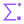
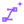

Scoring
每道题的分数怎样进入总分
两类题分开合成，各折算成 0–100 分，再按权重加权。灰色数字是一组示例。
Standard
标准评判题
6 题
数学推理程序校验
生成分数鲁班锁 66.68 / 100
折算
原始分 ÷ 满分 × 100
66.68 ÷ 100 × 100 = 66.7
Design
主动设计题
6 题
复杂交互应用游戏设计与开发物理模拟视觉设计与渲染系统架构与实现Claude Opus 5.5
全部分项52.0
GPT 6.1 Sol
全部分项48.0
逐项取两位的平均，再相加
(52.0 + 48.0) ÷ 2 = 50.0
66.7
本题得分
St
0–100
50.0
权重 wt
先分到类别，类别内各题平分，12 题合计 100%
模型总分
Σ wt St
特殊情况
只有一位评分员的结果有效：用这一位的
没有有效结果：本题没有分数，总分里暂按 0 分计